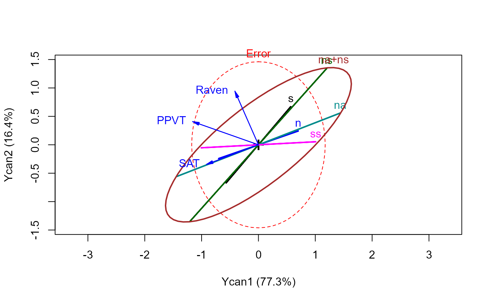
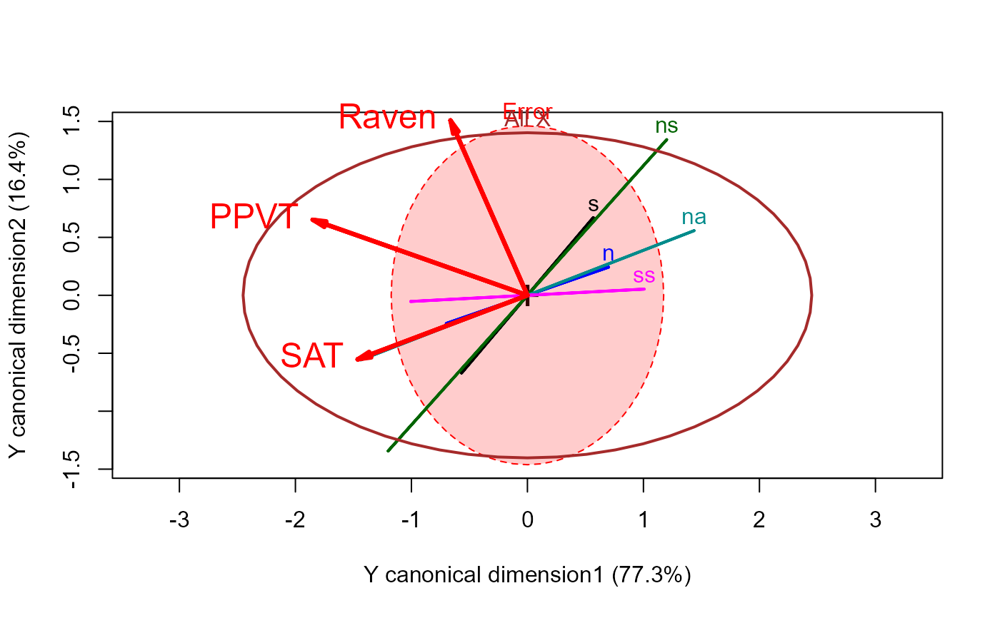
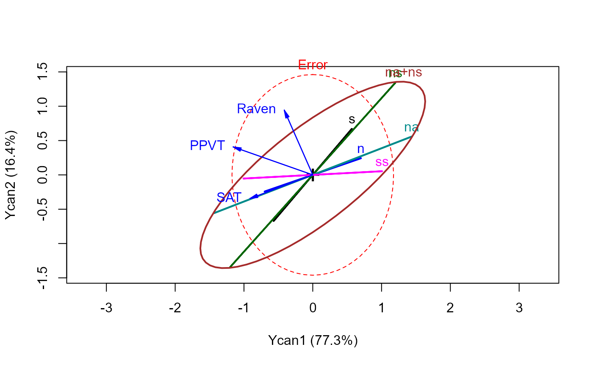
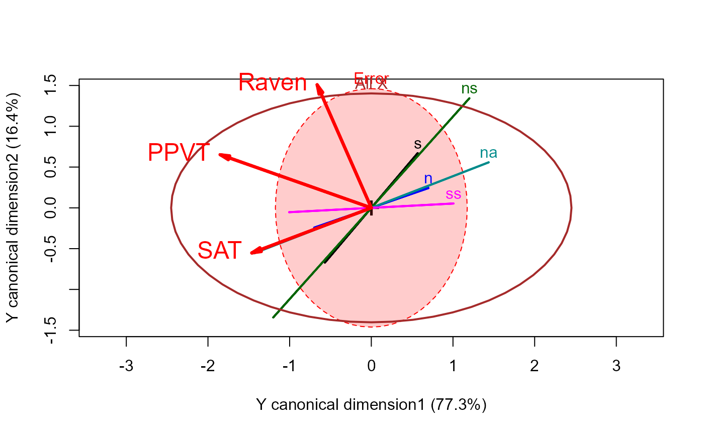

Hypothesis - Error (HE) plots for canonical correlation analysis provide a new graphical method for understanding the relations between two sets of variables, \(\mathbf{X}\) and \(\mathbf{Y}\). They are similar to HE plots for multivariate multiple regression (MMRA) problems, except that ...
These functions plot ellipses (or ellipsoids in 3D) in canonical space representing the hypothesis and error sums-of-squares-and-products matrices for terms in a multivariate linear model representing the result of a canonical correlation analysis. They provide a low-rank 2D (or 3D) view of the effects in the space of maximum canonical correlations, together with variable vectors representing the correlations of Y variables with the canonical dimensions.
For consistency with heplot.candisc(), the plots show effects in
the space of the canonical Y variables selected by which.
Arguments
- mod
A
"cancor"object, as computed bycancor()- which
A numeric vector containing the indices of the Y canonical dimensions to plot.
- scale
Scale factor for the variable vectors in canonical space. If not specified, the function calculates one to make the variable vectors approximately fill the plot window.
- asp
aspect ratio setting. Use
asp=1in 2D plots andasp="iso"in 3D plots to ensure equal units on the axes. Useasp=NAin 2D plots andasp=NULLin 3D plots to allow separate scaling for the axes. See Details below.- var.vectors
Which variable vectors to plot? A character vector containing one or more of
"X"and"Y".- var.col
Color(s) for variable vectors and labels, a vector of length 1 or 2. The first color is used for Y vectors and the second for X vectors, if these are plotted.
- var.lwd
Line width for variable vectors
- var.cex
Text size for variable vector labels
- var.xpd
logical. Allow variable labels outside the plot box? Does not apply to 3D plots.
- prefix
Prefix for labels of the Y canonical dimensions.
- suffix
Suffix for labels of canonical dimensions. If
suffix=TRUEthe percent of hypothesis (H) variance accounted for by each canonical dimension is added to the axis label.- terms
Terms for the X variables to be plotted in canonical space. The default,
terms=TRUEorterms="X"plots H ellipses for all of the X variables.terms="Xcan"plots H ellipses for all of the X canonical variables,Xcan1,Xcan2, ....- ...
Other arguments passed to
link[heplots]{heplot}. In particular, you can pass linear hypotheses among the term variables viahypotheses.
Value
Returns invisibly an object of class "heplot", with
coordinates for the various hypothesis ellipses and the error ellipse, and
the limits of the horizontal and vertical axes.
Details
The interpretation of variable vectors in these plots is different from that
of the terms plotted as H "ellipses," which appear as degenerate
lines in the plot (because they correspond to 1 df tests of rank(H)=1).
In canonical space, the interpretation of the H ellipses for the
terms is the same as in ordinary HE plots: a term is significant
iff its H ellipse projects outside the (orthogonalized) E ellipsoid
somewhere in the space of the Y canonical dimensions. The orientation of
each H ellipse with respect to the Y canonical dimensions indicates which
dimensions that X variate contributes to.
On the other hand, the variable vectors shown in these plots are intended
only to show the correlations of Y variables with the canonical dimensions.
Only their relative lengths and angles with respect to the Y canonical
dimensions have meaning. Relative lengths correspond to proportions of
variance accounted for in the Y canonical dimensions plotted; angles between
the variable vectors and the canonical axes correspond to the structure
correlations. The absolute lengths of these vectors are typically
manipulated by the scale argument to provide better visual resolution
and labeling for the variables.
Setting the aspect ratio of these plots is important for the proper
interpretation of angles between the variable vectors and the coordinate
axes. However, this then makes it impossible to change the aspect ratio of
the plot by re-sizing manually. You can override this using asp=NA in 2D plots
References
Gittins, R. (1985). Canonical Analysis: A Review with Applications in Ecology, Berlin: Springer.
Mardia, K. V., Kent, J. T. and Bibby, J. M. (1979). Multivariate Analysis. London: Academic Press.
Examples
data(Rohwer, package="heplots")
X <- as.matrix(Rohwer[,6:10])
Y <- as.matrix(Rohwer[,3:5])
cc <- cancor(X, Y, set.names=c("PA", "Ability"))
# basic plot
heplot(cc)
 #> Vector scale factor set to 1
# note relationship of joint hypothesis to individual ones
heplot(cc, scale=1.25, hypotheses=list("na+ns"=c("na", "ns")))

# more options
heplot(cc, hypotheses=list("All X"=colnames(X)),
fill=c(TRUE,FALSE), fill.alpha=0.2,
var.cex=1.5, var.col="red", var.lwd=3,
prefix="Y canonical dimension"
)

#> Vector scale factor set to 2
# 3D version
if (FALSE) { # \dontrun{
heplot3d(cc, var.lwd=3, var.col="red")
} # }
#> Vector scale factor set to 1
# note relationship of joint hypothesis to individual ones
heplot(cc, scale=1.25, hypotheses=list("na+ns"=c("na", "ns")))

# more options
heplot(cc, hypotheses=list("All X"=colnames(X)),
fill=c(TRUE,FALSE), fill.alpha=0.2,
var.cex=1.5, var.col="red", var.lwd=3,
prefix="Y canonical dimension"
)

#> Vector scale factor set to 2
# 3D version
if (FALSE) { # \dontrun{
heplot3d(cc, var.lwd=3, var.col="red")
} # }